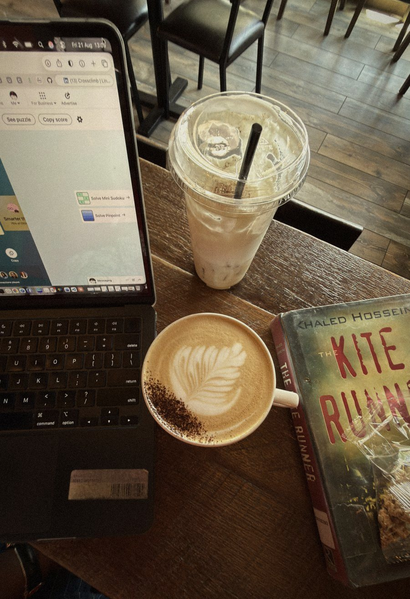
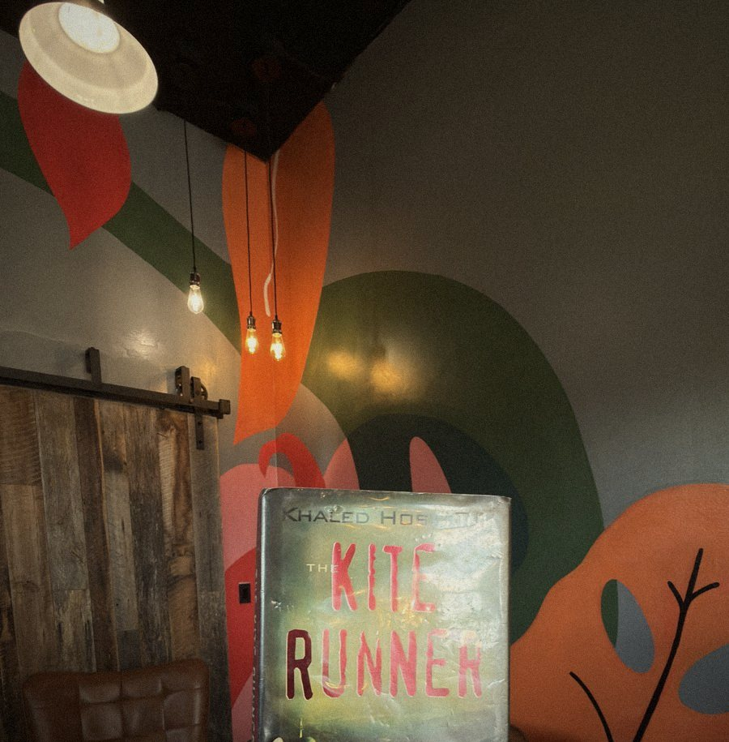
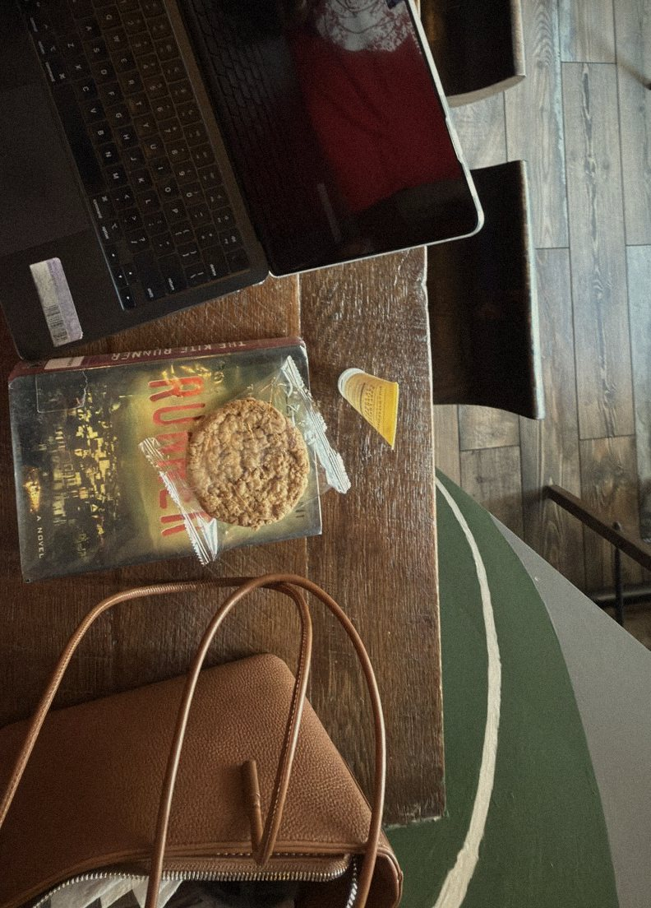
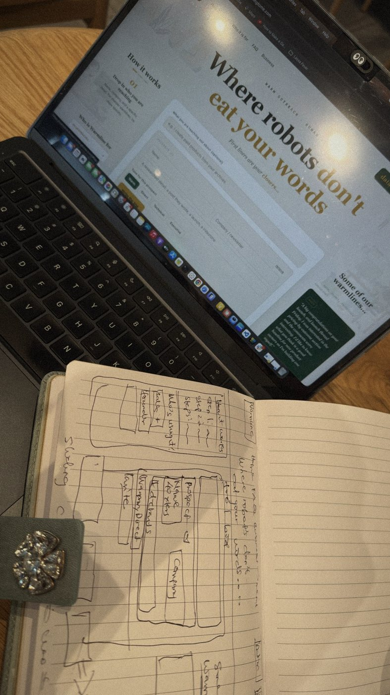
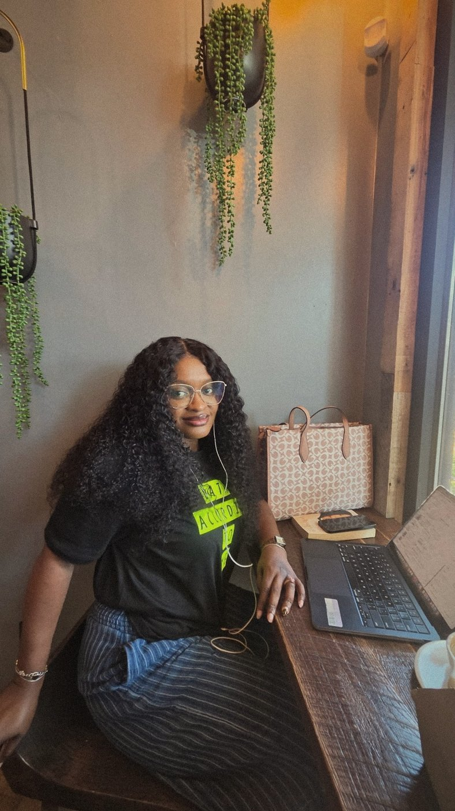
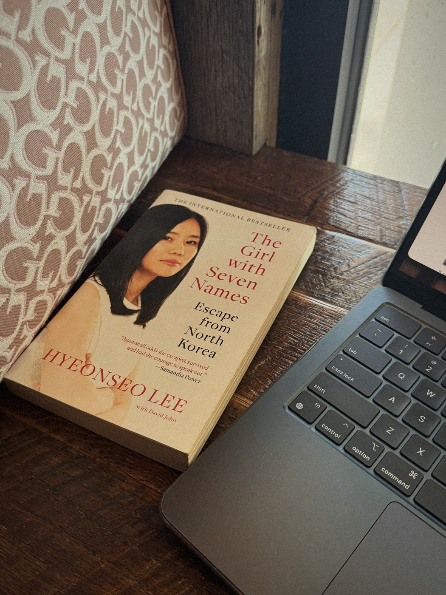

Coffee, Matcha, and books. A cafe is my favorite spot
this one, August 21 ↘


the mural wall

cookie break, chapter break

working, not reading (yet)

me, mid-chapter

window seat, seven names
This page needs JavaScript turned on to open.